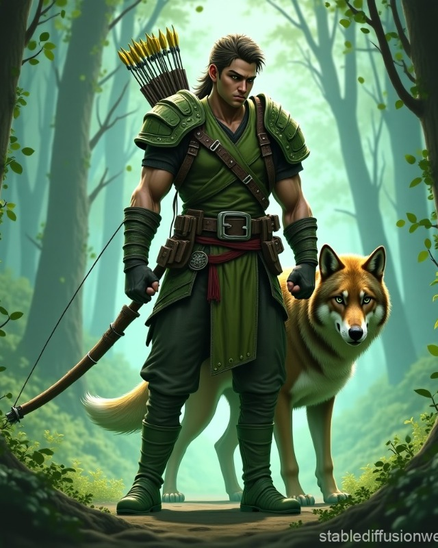

Cedric
Ranger / tropiciel / strzelec
Oddzielaj prawdziwe slady od falszywych tropow Odrana. Kiedy ktos naciska na pospiech, Cedric pyta o dowody.
SurvivalPerceptionNatureStealth
Skille
- Survival: tropienie, slady przy kaplicy, droga do ruin, ukryty trakt.
- Perception: sekrety, zasadzki, ukryte obiekty.
- Nature: cisza wioski, zwierzeta, nienaturalny popiol.
- Stealth: podejscie do mlyna i patroli.
Umiejetnosci
- Hunt Prey: oznacz kluczowego przeciwnika.
- Hunted Shot: skup ogien na jednym celu.
- Experienced Tracker: +2 status do tropienia.
- Animal Companion: wilk do presji na flankach.
Taktyka
- Nie stawaj w pierwszej linii, jesli Kord moze zwiazac przeciwnika.
- Oznacz `Ashen Knight` albo silniejszego straznika jako prey.
- Wilkiem wspieraj flankowanie bez blokowania przejsc.
- W mlynie zdejmij straznika najblizej Tovina.
Sledztwo
- Na rynku zbadaj studnie i popiol.
- W kaplicy szukaj sladow wyniesienia relikwiarza.
- W mlynie sprawdz tylne wyjscia i worki z popiolem.
- W ruinach zapytaj Mire, co "mowi popiol".
Pytania do NPC
- Do Odrana: "Kto pierwszy znalazl spalona kaplice?"
- Do Elny: "Gdzie ostatnio widziano Tovina?"
- Do Miry: "Czy popiol pokazuje slady zywych czy umarlych?"
Motywacja: Cedric nie lubi, gdy ktos uzywa oficjalnej wersji jako smyczy.